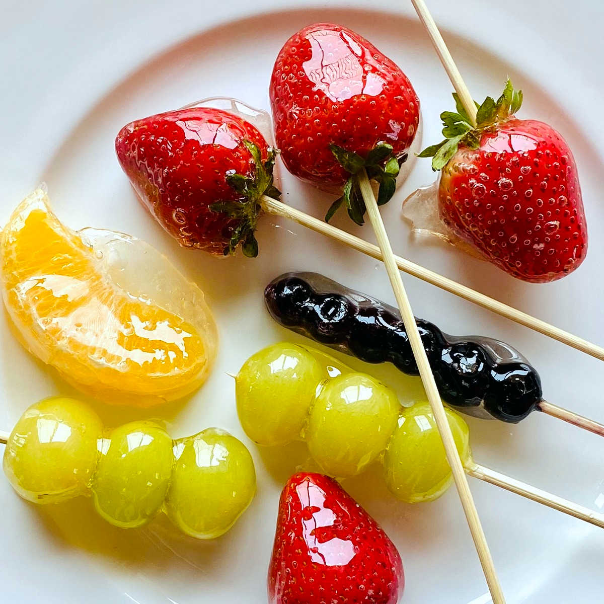

Tanghulu
Tanghulu is a popular Chinese street food that you can find throughout northern china. It is made by adding
fruits to bamboo skewers and dipping them in sugar syrup then in an ice bath creating a hard candy shell that
pairs so perfectly with the softness of the fruit.
Ingredients and Materials
- 1 cup of granualated sugar
- 1/2 cup of water
- Small or chopped fruit of your choice
- Ice water
- Skewers
- Medium pot
Best Fruits for Tanghulu
Traditional candied fruit in China uses hawthorn fruit. In my opinion, strawberries, tangerine slices, cherries,
pineapple chunks, kiwi slices, and seedless grapes work the best.
Instructions
- Wash and dry your fruit fully before starting.
- Add 1-3 pieces of fruit to a wooden skewer.
- In a medium pot add the sugar and water and heat up over medium heat until the mixture is boiling and
reaches 275-329 degrees Fahrenheit. This will take anywhere between 5-10 minutes.
- When the sugar syrup is ready, turn the temperature down all the way; work quickly and carefully dip
the
fruits in the sugar syrup and rotate the skewer around to coat.
- Allow the sugar to drip off the fruit before dipping in the ice water for 2-4 seconds to allow the sugar
mixture to harden.
- Place the fruit on a parchment paper lined baking sheet or plate to let them cool down even more.
- Enjoy!
Tips
- If you don't have a thermometer you can check if the sugar is ready by dipping a spoon or wooden skewer and
immediately dipping it in ice water. If it hardens it is ready.
- If the sugar mixture crystallizes, add a little water then bring it back up to the right temperature and dip
your fruits in it again. Be careful not to heat it up too much or you will end up with caramel.
- This is one of those treats that is best served immediately after making. If you need to store it for later,
place it in an airtight container or ziplock bag in the fridge or freezer to keep the candy shell intact.
To view original recipe, go to
lifestyleofafoodie.com